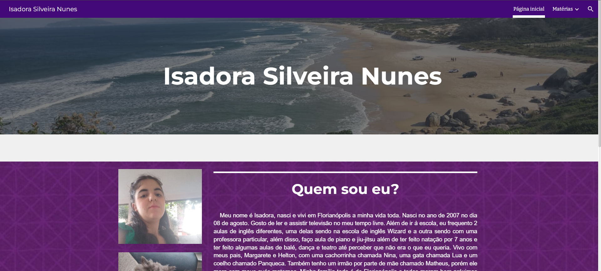

Isadora Silveira Nunes
Isadora Silveira Nunes nasceu em Florianópolis no dia 08 de agosto de 2007. Em sua vida inteira ela só esteve em 2 colégios, o Santa Terezinha no Ingleses, e agora, no SESI. Ela tem um carinho pelas áreas de humanas e linguagens, tendo muito mais facilidade na área. Porém ela pretende seguir o caminho oposto, o caminho da tecnologia, como Análise de Sistemas, que é mais focado em exatas.
∇ Clique aqui para visitar o meu currículo! ∇

∇ Portfólios anteriores: ∇
